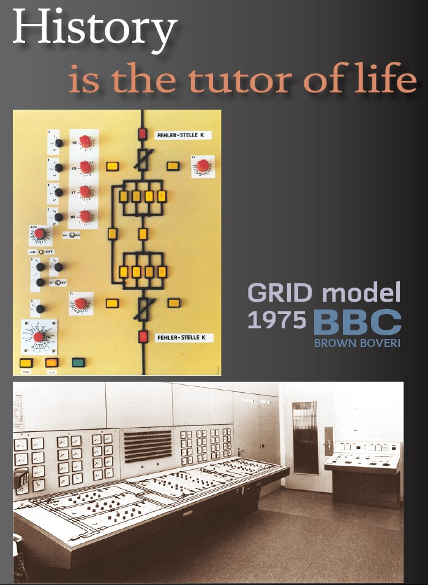

bw_0031 · interior_control_room
模型实际输入详情 · 两个模型的 inputs 文件逐字节一致，已核验。
原始题目全文
以下逐字展示 query.txt，保留原文语言；这是任务要求，并非生成结果或评分标准。
我们在做一套电网调度安全培训课件，得照着这张1970年代的老照片还原一间调度控制室，做进培训幻灯片里给运行员讲台盘布局和风险点。房间大致是矩形，房型和墙体围合关系严格按图来、别改。主墙面要密布成行成列、规格统一的方形仪表指示盘阵列（行列数按图里比例估，别硬凑精确数字）；中部偏左放一张长条斜面操作台，下面是水平书写台面、上面是倾斜控制面，密布旋钮、按钮和仪表；再按图上那块黄色 GRID 模拟盘的样子做一块电网单线图模拟盘。其余的墙面通风格栅、右墙角那张较小的独立控制台这些按图中可见内容补齐，保持彼此的相对比例和位置。因为参考是没标尺寸的单色老照片，层高、台面倾角和高度这些你按常规控制室人机工程和画面比例自己定，别给精确毫米。重点是这几块关键台盘和仪表要看得清、认得出，整个房间的尺度和比例要可信，别让人一看就觉得比例失真。材质、灯光、两个机位的取景和渲染设置，还有模拟盘上那些指示灯和德文标注的细节，我都整理在附带的 `scene_spec.md` 里了，按那个来。年代氛围你可以自己把握，整体做出七十年代控制室的中性米灰调子。最后给我成图，分辨率不低于 1920×1080，出 PNG；Blender 工程也按部件把集合命名清楚存好，后面可能要换角度、加标注。下载 query.txt
原始参考素材

任务附件
attachments/scene_spec.md
# 1970年代电网调度控制室 — 场景规格 ## 电网 GRID 模拟盘（按图中黄色盘还原） | 元素 | 规格 | |---|---| | 盘面 | 明黄底色 | | 电网单线图 | 黑色单线绘制 | | 圆形指示灯 | 红色 | | 方形指示灯 | 琥珀色 | | 选择开关 | 黑色旋钮，带刻度盘 | | 文字标注 | 德文功能标签 | > 可作墙面或台体立面的模拟盘，位置与图一致。 ## 材质（年代感中性米灰色调） - 墙面 / 吊顶：浅色哑光 - 操作台 / 控制台：浅灰或米色金属 + 层压饰面 - 仪表 / 指示盘：深色边框 + 浅色面 - 各类指示灯：自发光（emissive）材质 ## 灯光 - 吊顶日光灯 / 面板灯（fluorescent troffer），做均匀主照明 - 整体略带年代感的室内氛围 ## 相机（两个机位） | 机位 | 用途 | |---|---| | 全景 | 还原原照片透视，略俯视，交代房间整体关系 | | 特写 | 对准斜面控制台 / GRID 模拟盘，看清旋钮与指示灯 | ## 渲染设置 - 引擎：Cycles，开启降噪 - 色彩管理：Filmic - 输出：PNG（分辨率与张数见正文） - 集合按部件规范命名后保存 .blend
本次运行附加的执行指令
这是自建 harness 传给两模型的共同执行指令，不属于原始题目。CPU 设置与个别原题 GPU 要求之间的差异，详见主页说明。
Complete the Blender creation task in /workspace/inputs/query.txt using all declared references and attachments in /workspace/inputs/input.json. Read the reference images with Read; for video, extract and inspect frames with ffmpeg and Read. Blender 4.2.10 is available as `blender` or /runtime/blender/blender. Python with Pillow/NumPy is available as `python`. You can write and run bpy scripts with background Blender. This machine uses CPU Cycles; use 8 threads, and inspect your renders before finishing. You have an 8-hour time budget. Fulfil the original requested deliverables, including animations and resolutions where specified. Save the editable primary project to /workspace/exports/final.blend, with requested images/videos and all texture dependencies inside /workspace/exports using relative paths or packed assets. Put temporary scripts and previews under /workspace/work. Do not finish while required rendering jobs are still running. Use only the provided task inputs, your tools, and your own creation work; evaluation is separate.
完整输入文件
| 文件（点击下载） | 大小 |
|---|---|
| attachments/scene_spec.md | 1,160 B |
| input.json | 197 B |
| instruction.html | 205,805 B |
| query.txt | 1,505 B |
| reference_images.base64.json | 200,607 B |
| references/image_01.jpg | 150,139 B |

查看 input.json 文件清单
{
"task_id": "bw_0031",
"query_file": "query.txt",
"files": [
"attachments/scene_spec.md",
"references/image_01.jpg",
"instruction.html",
"reference_images.base64.json"
]
}
instruction.html 和 reference_images.base64.json 为输入目录内的原始文件，已保留供下载。本页不包含评测 rubric 或模型产物。